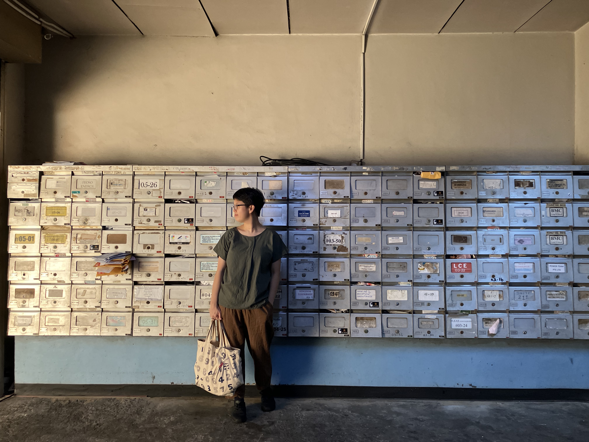

encounterzones
5 April, 3pm – 5pm
Goodman Arts Centre Meeting Room
$38
encounterzones is an immersive interdisciplinary jam where artists of all disciplines are invited to improvise and explore together through mutual presence, curiosity, and responsiveness. The session is an opportunity to practice deep listening, mutual awareness, and embodied encounters across disciplines — surrendering control over the outcome in favour of artistic play, risk-taking, and experimentation.
The jam is anchored by a group of invited practitioners who play and work across dance, music, theatre, writing, design, and visual arts. Additional texts and prompts will be provided, which participants may engage with or ignore depending on their desires.
You can join the session as a participant or observer. Attendees who indicate interest in participating will be contacted with further information about what to prepare and expect.
artists
Faith Liu Yong Huay

Sometimes light, sometimes movement, sometimes art. She likes spaces. She is part of 微Wei Collective.
Mei Fei

Mei Fei is a movement artist interested in exploring the relationship between text and body. Drawing from her movement training in Bharatanatyam and Odissi, she enjoys playing through improvisation, approaching movement through somatic exploration.
Syafiq Halid

Syafiq Halid is a Singapore-based electronic artist, experimental percussionist, and sound designer whose practice spans traditional, multidisciplinary, and contemporary performance. His works have been presented across the Asia-Pacific, including Singapore, Malaysia, Indonesia, Vietnam, and Australia, and with platforms such as the Esplanade – Theatres on the Bay, National Gallery Singapore, ArtScience Museum, Singapore Art Museum, and Goethe-Institut. Drawing from the sonic and cultural landscapes of the Malay world, he reimagines traditional materials through experimental processes, crafting a distinctive Southeast Asian sonic language that reflects on identity, memory, and the relationship of being Malay in Singapore and the region.
Photograph by Ryan Cara
Tan Weiying

Weiying is a theatre artist whose work explores transformations of spaces through movement. Her experiences include performing, directing, and education. She is currently a teaching artist at Chowk Productions, engaging in an ongoing conversation between training in odissi and her own butoh practice.
Yeow Kai Chai

Yeow Kai Chai is a poet, fiction writer and editor. He has three poetry collections: Secret Manta (2001); Pretend I'm Not Here (2006); and One to the Dark Tower Comes (2020), which was awarded the 2022 Singapore Literature Prize. He has worked as editor-in-chief, entertainment editor and music reviewer in various media such as The Straits Times, My Paper, and 8 Days for three decades. A co-editor of Quarterly Literary Review Singapore, he was Festival Director of Singapore Writers Festival from 2015 to 2018.